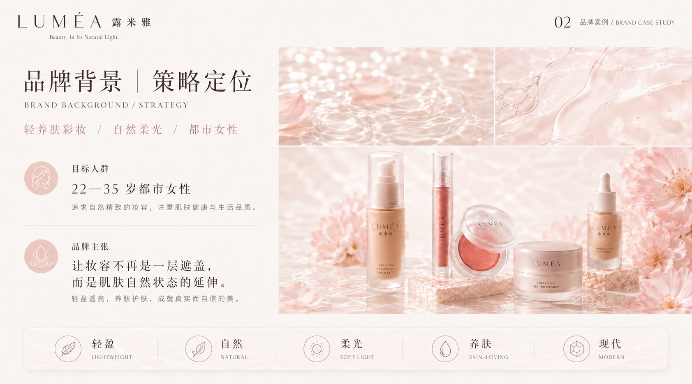
01 / Brand Strategy
品牌背景与策略定位
品牌希望打破传统彩妆强调遮盖与修饰的单一表达，将彩妆重新定义为一种轻盈、自然、没有负担的日常状态。核心价值是让妆容不再成为一层遮盖，而是肌肤自然状态的延伸。
Keywords轻盈 / 自然 / 柔光 / 养肤 / 治愈 / 克制 / 现代
Brand Value让真实肤感与自然光泽成为品牌体验的一部分。
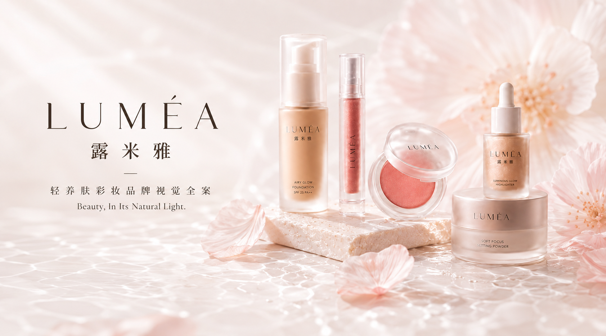
LUMÉA 露米雅是一个面向年轻都市女性的轻养肤彩妆品牌。项目以轻薄妆感和养肤体验为核心，从品牌定位、视觉识别、产品包装、商业摄影、电商视觉到社交媒体传播，建立一套完整且具备商业落地能力的品牌视觉系统。

品牌希望打破传统彩妆强调遮盖与修饰的单一表达，将彩妆重新定义为一种轻盈、自然、没有负担的日常状态。核心价值是让妆容不再成为一层遮盖，而是肌肤自然状态的延伸。
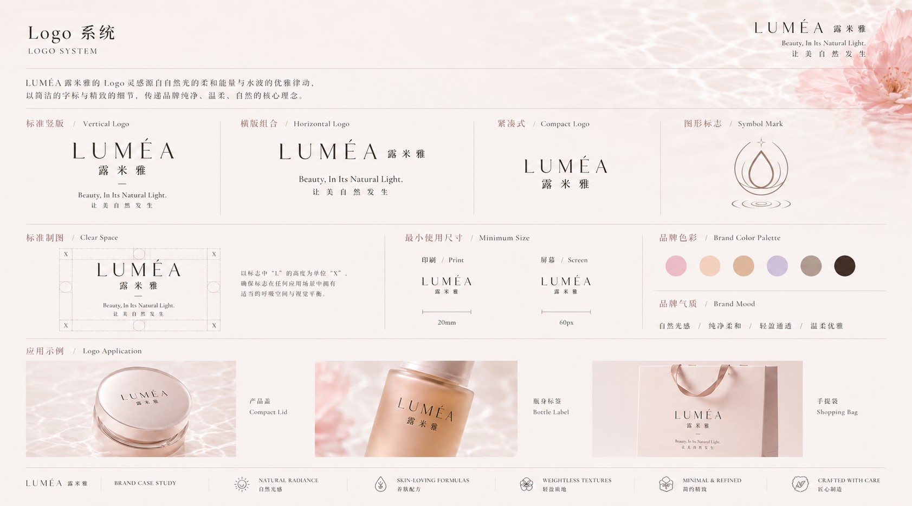
LUMÉA 由 Light、Lume 与自然光感意象延伸而来。品牌标志采用纤细的现代衬线字体，通过比例与字距调整，在优雅感、现代感与辨识度之间建立平衡。
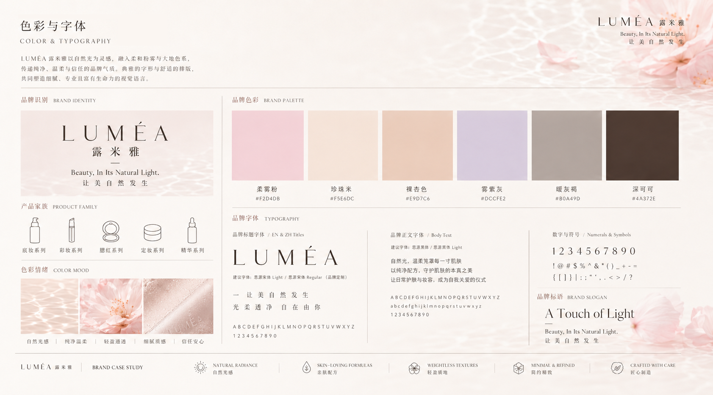
视觉以自然光线穿过半透明材质形成的柔和渐变为灵感，通过柔雾感、流动光影、留白与低饱和色彩，表现肌肤呼吸感、轻盈妆感和温和体验。
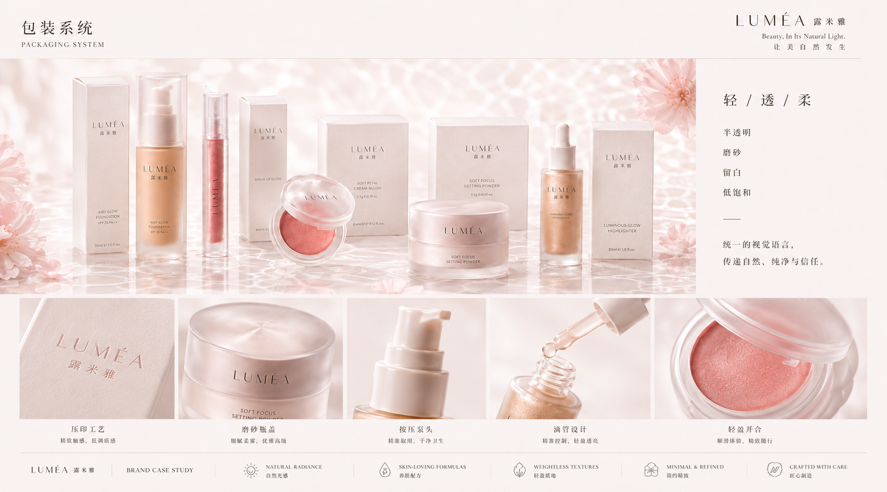
瓶身采用半透明磨砂材质，让产品颜色成为包装视觉的一部分；外盒使用大面积留白与低饱和色块，并以克制的网格系统建立专业、可信赖的产品印象。
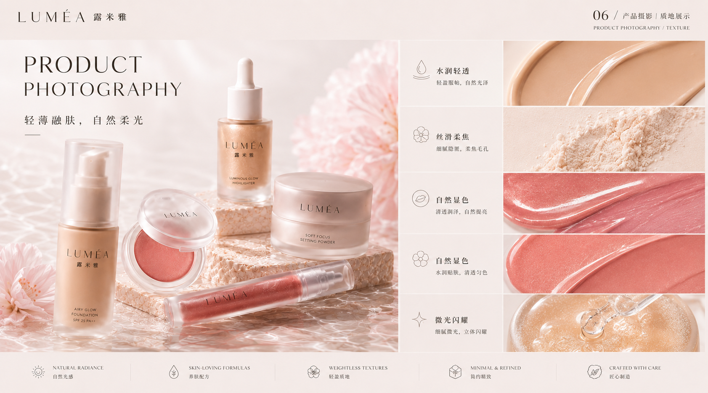
品牌主视觉以柔和光线、半透明材质、花瓣、水面与肌肤局部为主要元素，通过低饱和色彩与局部高光表现产品轻盈、柔润、通透的质感。
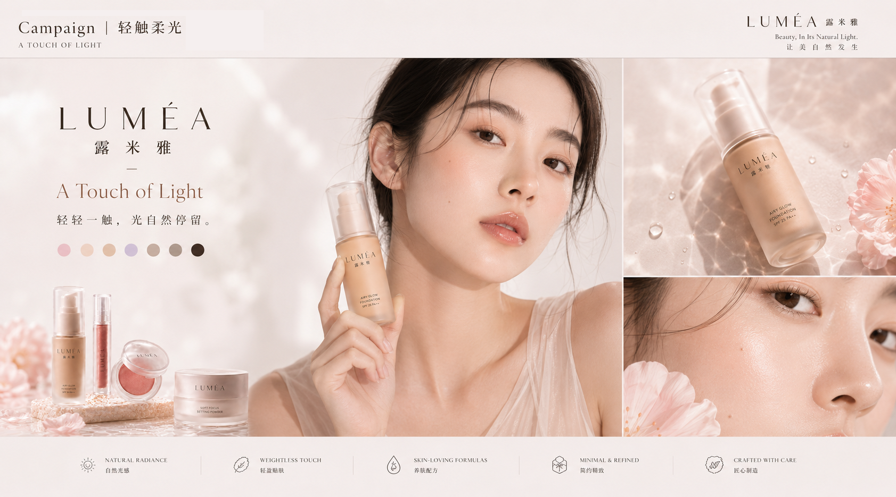
新品 Campaign 以“光线触碰肌肤”为创意核心，通过柔光、肌肤局部、透明产品材质与流动色彩，呈现产品与肌肤自然融合的过程。
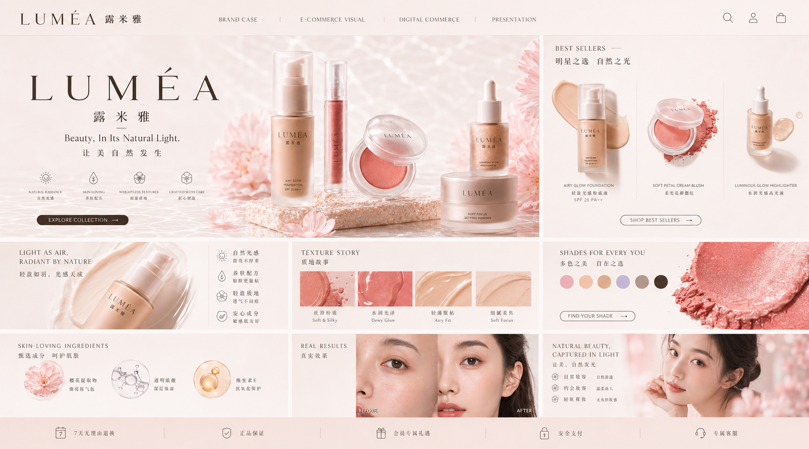
07 / E-commerce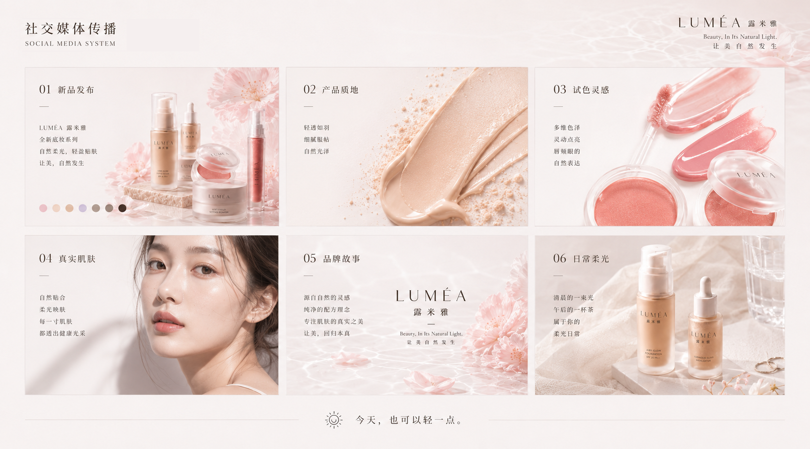
08 / Social Media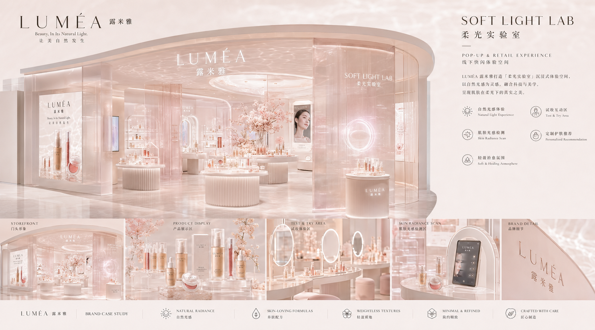
09 / Spatial Experience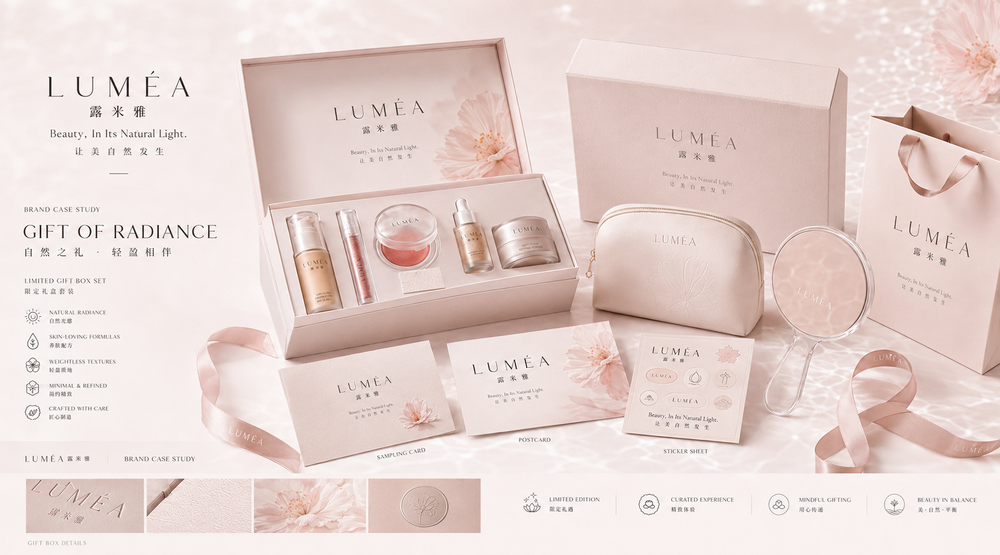
10 / Gift & Merchandise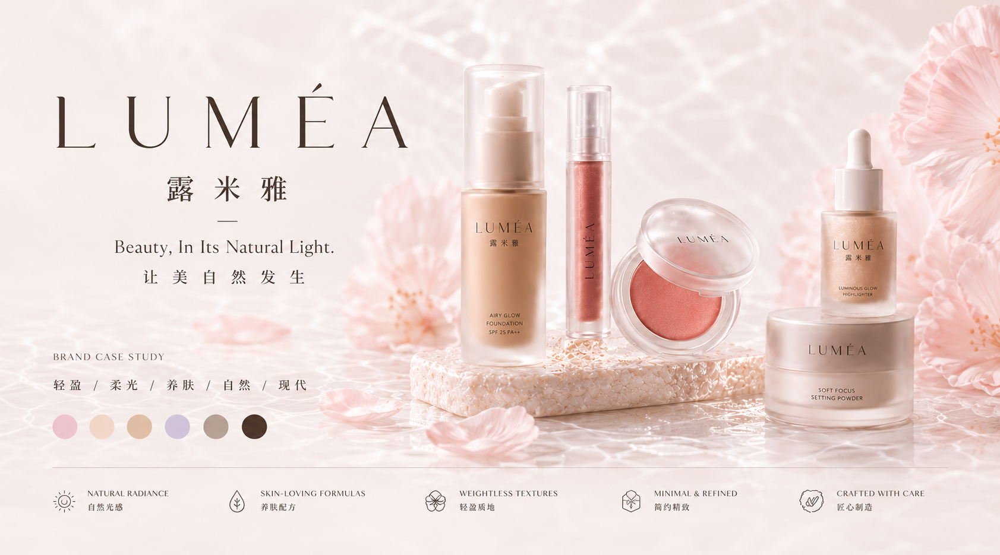
11 / Brand Extension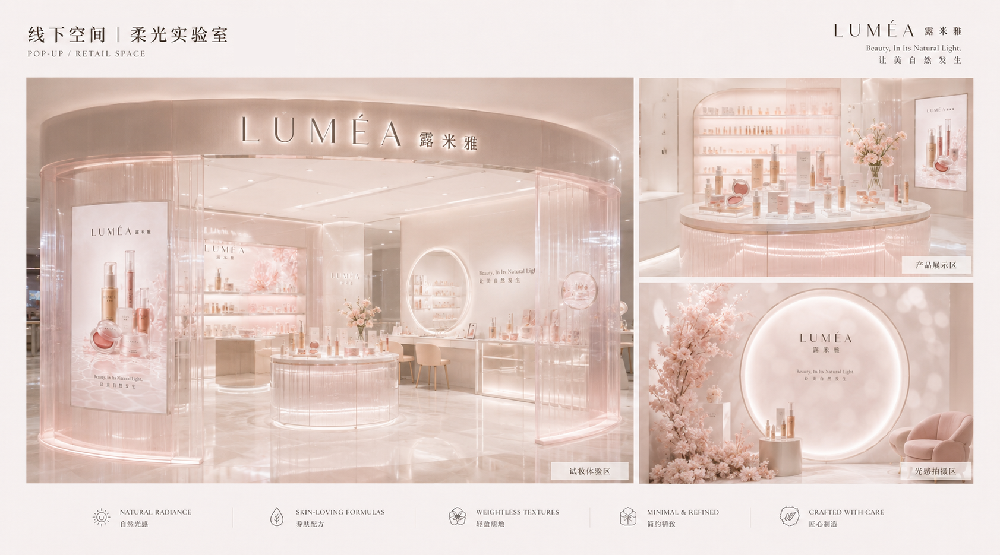
12 / Retail Space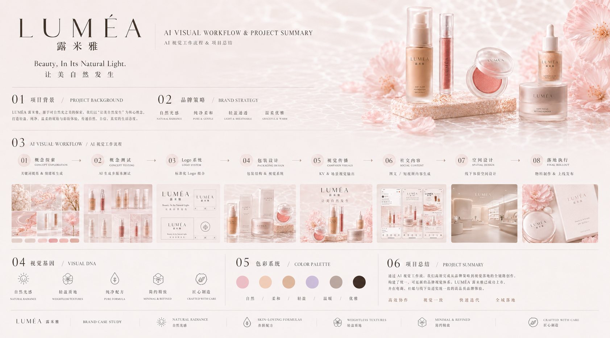
13 / AI Workflow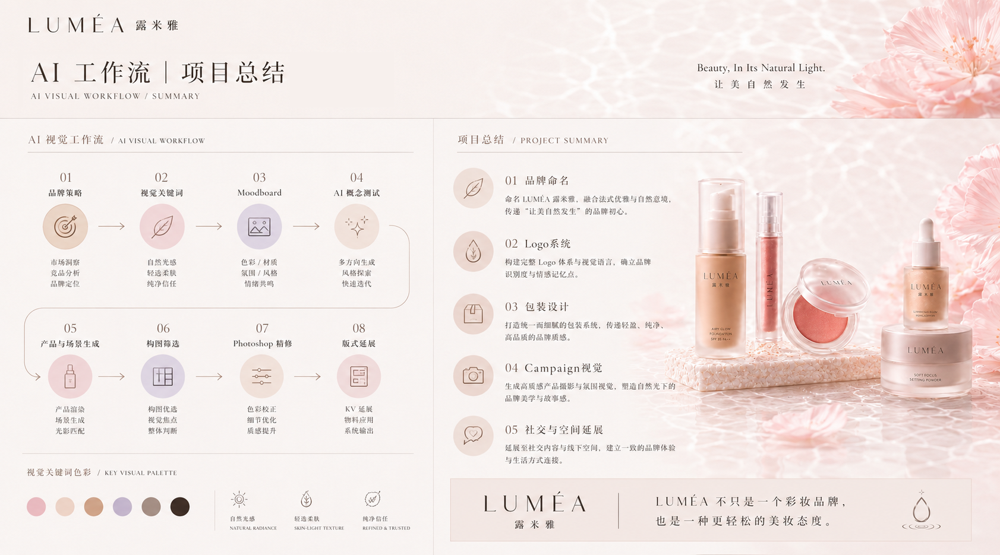
14 / Project SummaryAI 主要用于品牌前期概念探索、风格测试、产品材质与场景生成。最终画面仍通过人工完成构图筛选、产品合成、材质修复、光影统一、文字排版与商业细节优化，确保项目具备完整性与落地能力。